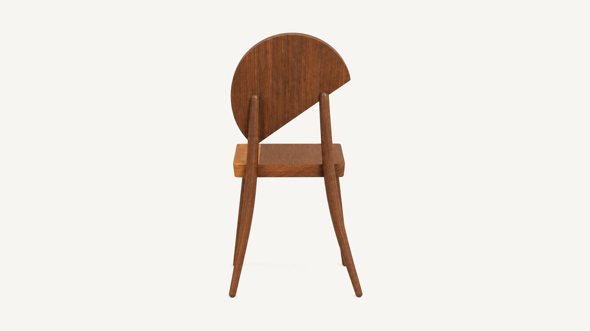
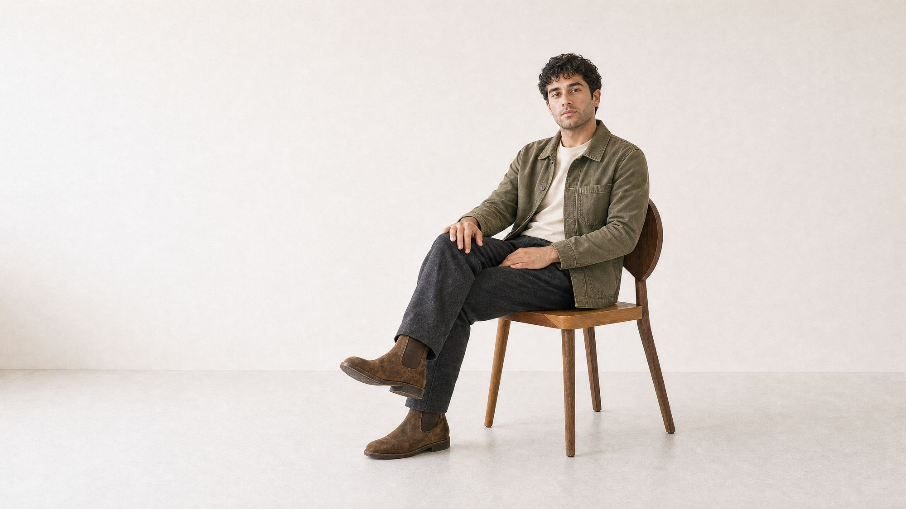
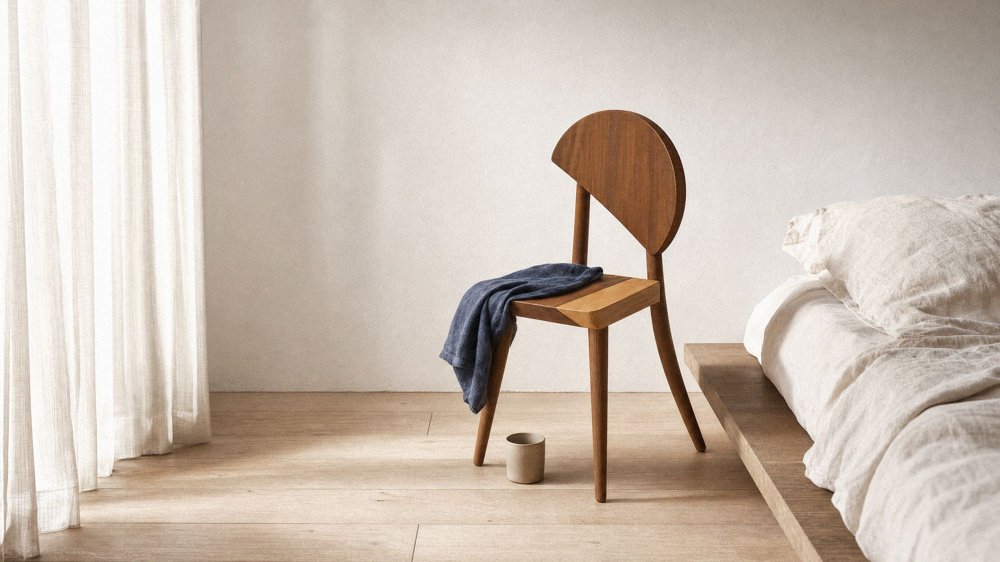
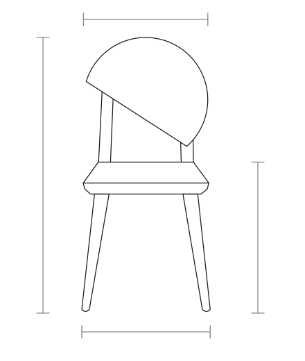

Totem
The circle, held upright.
A half-disc of solid walnut set on a warm oak seat — simple forms stacked into a quiet monument. Totem brings the circle into the room: soft, centred, and unmistakably present.

The body
Held by a single curve.
The half-disc back meets the shoulders as one continuous arc of walnut — it supports without enclosing, and reads as sculpture from across the room.
Construction
Backrest
Solid walnut, a single half-disc.
Seat
Oak, warm against the walnut.
Legs
Four tapered walnut legs.



Drawing

—
mm — overall height, to confirm
- Height
- —
- Seat height
- —
- Width
- —
- Depth
- —
- Backrest
- Solid walnut
- Seat
- Oak
- Finish
- Natural oil
The collection, same angle
TotemCurrent

ShardView →
FloatView →